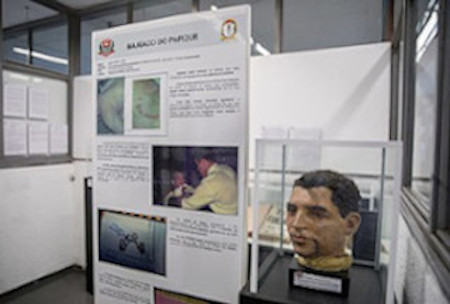

Os crimes que chocaram na década de 1990
Quando falamos da década de 90, é fácil recordar dos crimes dessa época que chocaram o povo brasileiro. Foram crimes marcantes, como exemplo do assassinato do Pc Farias e Pedrinho Matador. Agora vamos relembrar alguns crimes da década de 1990.
Maníaco do Parque
O Francisco de Assis Pereira ficou conhecido como Maníaco do Parque no Brasil. Entre 1997 e 1998 ele estuprou e assassinou por volta de seis mulheres e tentou matar outras mulheres. Os crimes ocorreram no Parque do Estado, na região sul de São Paulo. Quando interrogado, Francisco afirmou ter matado 11 mulheres ao todo. Disse que era fácil emboscar as vítimas, ele as cobriam de elogios, ofertava altos cachês e convidava para uma sessão de fotos ao ar livre. Depois disso, as estuprava e em seguida matava. Ele está hoje cumprindo pena na penitenciária de Taubaté, em São Paulo. Na cadeia, ele recebeu diversas cartas de admiradoras e até se casou com uma delas.
Daniella Perez
A atriz, Daniella Perez que é filha da autora Glória Perez, tinha apenas 22 anos quando estava atuando na novela "De corpo e alma". A atriz teve sua vida interrompida em 1992 pelo colega de trabalho, chamado Guilherme de Pádua, com quem fazia par romântico na novela. Os membros da equipe diziam que ele assediava Daniella com a esperança de que ela conseguisse mais destaque para o personagem do Guilherme de Pádua. Após uma gravação de uma cena onde a personagem de Daniella dá um fora no personagem de Guilherme, ele ficou transtornado com crise de choro e esmurrou o estúdio. Após a gravação dessa cena, Guilherme pegou sua esposa Paula Thomaz em casa, e os dois voltaram ao estúdio. Depois que Daniella saiu do estúdio, Guilherme a seguiu e fechou o carro da atriz e a desferiu com um soco, ficando desarcodada. Em um terreno baldio, Guilherme e Paula mataram Daniella com 18 facadas. Os dois foram condenados a 19 anos de prisão, mas sairam em 1999.
Chacina da Candelária
Era julho de 1993, a escadas da Igreja da Candelária, no Rio de Janeiro, servia de abrigo para dezenas de pessoas moradoras de rua. Na noite do dia 23, dois carros com placas camufladas pararam em frente a Igreja e atiraram contra o pessoal que dormia. Várias ficaram feridas, oito morreram, seis menores e dois maiores de idade. Seus corpos foram mostrados nos jornais impressos e de TV.